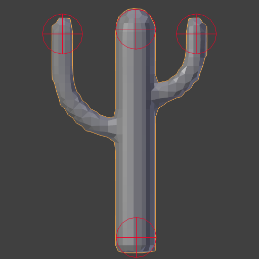
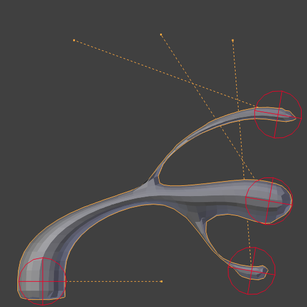
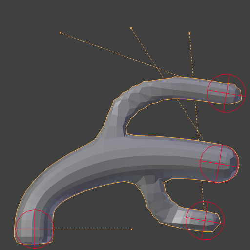
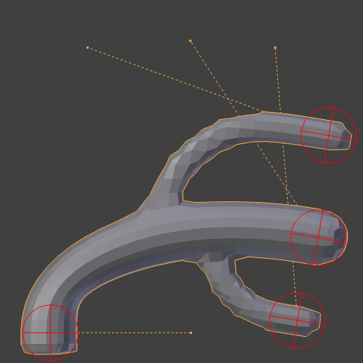
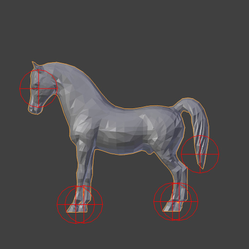

Модифікатор «Лапласове Деформування» -- Laplacian Deform Modifier¶
Модифікатор Laplacian Deform дозволяє вам позувати сіть, зберігаючи при цьому геометричні деталі поверхні.
Користувач визначає набір «якірних» вершин, а потім пересуває деякі з них навколо. Модифікатор зберігає решту якірних вершин у фіксованих позиціях і розраховує найкращі можливі локації цих усіх решти вершин для збереження оригінальних геометричних деталей.
This modifier captures the geometric details with the use of differential coordinates. The differential coordinates captures the local geometric information how curvature and direction of a vertex based on its neighbors.
Ghi chú
You must define an Anchors Vertex Group. Without a Vertex Group Modifier does nothing.
Опції¶
Модифікатор «Лапласове Деформування» -- Laplacian Deform.
- Повтор -- Repeat
З кожним повтором покращується знайдене рішення. Мета тут полягає у тому, що знайти таке обертання диференціальних координат, яке збереже найкращим можливим чином геометричні деталі. Деталі зберігаються краще, якщо використовується більше повторів, однак, це збільшує час на розрахування.
Оригінальна модель.
Повтор -- Repeat: 1.
Повтор: 2.
Повтор: 5.
Оригінальна модель.

Повтор -- Repeat: 1.

Повтор: 2.

Повтор: 10.
- Група Вершин Якорів -- Anchors Vertex Group
- A vertex group name, to define the group of vertices that the user will use to transform the model. The weight of each vertex does not affect the behavior of the modifier; the method only takes into account vertices with weight greater than 0.
- Прив'язання -- Bind
- Кнопка Bind -- це те, що каже модифікатору Laplacian Deform фактично захопити деталі геометрії об'єкта так, щоб змінювання якірних вершин фактично змінювало форму деформованого об'єкта.
- Відв'язання -- Unbind
- Після прив'язування модифікатора ви можете пізніше вирішити зробити зміни у Групі Вершин Якорів. Для цього вам спершу потрібно буде Відв'язати модифікатор, зробити зміни та прив'язати його знову.
{kind=link}
{kind=link}
{kind=link}
{kind=link}
{kind=link}
Повідомлення про помилки -- Error Messages¶
- Vertex group group_name is not valid -- Ім'я групи вершин не дійсне
- Це повідомлення показується, коли користувач видаляє вказану Групу Вершин або коли користувач змінює ім'я вказаної Групи Вершин.
- Vertices changed from X to Y -- Вершини змінено з X на Y
- Це повідомлення показується, коли користувач додає або видаляє вершини в сіті.
- Edges changed from X to Y -- Ребра змінено з X на Y
- Це повідомлення показується, коли користувач додає або видаляє ребра в сіті.
- The system did not find a solution -- Система не знайшла рішення
- Це повідомлення показується, коли обчислювач не може знайти обчислення для такої лінеарної системи.
Ghi chú
If the mesh is dense, with a number of vertices greater than 100,000, then it is possible that the non-linear optimization system will fail.
Історія¶
«Лапласове редагування поверхні» -- Laplacian Surface Editing -- це метод, розроблений Ольгою Соркін -- Olga Sorkine та іншими у 2004. Цей метод зберігає геометричні деталі, наскільки це можливо, у ході того, як користувач здійснює операції редагування, правлення. Цей метод використовує диференційні координати -- differential coordinates, що відповідають різниці між вектором та виваженим усередненням його сусідів для представлення локальної геометричної деталі сіті.
{kind=link}
Диференціальна координата.